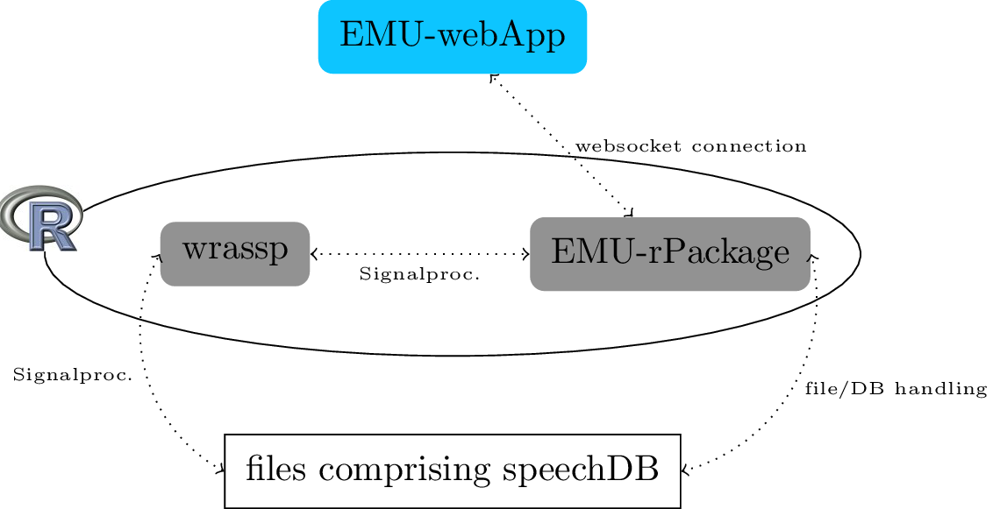
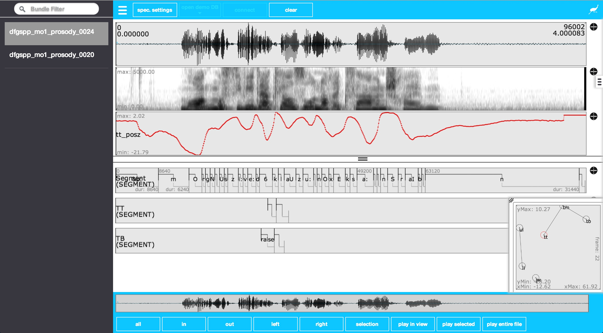

Due to several maintainability and other issues of the old EMU system, we have made the decision to reimplement the EMU speech database management system almost from scratch. In doing so we are trying to keep most of the concepts of the old system in place while improving on things like usability, maintainability, scalability, stability, speed and more.
The core of the new system will be based in the R language for statistical computing. We are currently developing two R packages (the gray items in the Figure below) that will form the core of the new system, one being the wrassp package to handle the speech signal processing and the other handling database manipulation and querying as well as serving as a local websocket server to connect to the EMU-webApp. This infrastructure will provide researchers with a self-contained system to query databases, perform signal processing and perform statistical analysis, all within the same environment. Wrassp and the web application will be able to be used as part of the new system or separately, as they can function as standalone applications/packages.
As with the old EMU system a collection of files on the user's hard drive will comprise a local speech database. These files will consist of audio files (initially only .wav audio files will be supported across all the system's components), SSFF files and text files in the JSON format. The text files will describe the database as well as contain the actual hierarchical and label information. The folder structure of the database will loosely adhere to the structure dbRootFolder → sessions → bundles, where a bundle contains all the files associated with a recorded entity (e.g. an utterance).
The wrassp package will be responsible for the signal processing. The functions of this package take a list of audio file paths as their main argument and produce SSFF files containing the derived signals (e.g. formant contours / f0 contours/ ...). These files can then be read from the user's hard drive for further analysis. A new feature is the ability not to write the result of a signal processing function back to disc but to return it as an in-memory-object. This feature is utilized by the EMU-rPackage to do "on the fly" calculations for data extraction queries of SSFF files that have not been precalculated (i.e. that don't exist as files on the user's hard drive).
Database queries will be handled by the EMU-rPackage. Before querying a database the user will have to load the database into memory using a function that the package provides. Segment extraction queries can then be run against this object (similar to emu.query()). As in the old system, the result of such a query can then be used to perform a data extraction query (similar to emu.track()). Data extraction can either be performed on precalculated SSFF files or calculated on the fly utilizing the in-memory capability of the wrassp package.
The graphical user interface (GUI) of EMU will be a web application that runs in the browser (initially only Google's Chrome browser will be fully supported). To install the webApp the only thing the user will have to do is navigate to a specific URL. Using a HTML5 technology called the application cache the browser intelligently caches the webApp so that the user can renavigate to the same URL, even without network connectivity, enabling online as well as offline usage.
To use the webApp to work on a local database the user will have to use the EMU-rPackage to load the database into memory. This object then has to be passed into a function that starts a local websocket server that runs in R. Now the user simply has to point the webApp to the websocket server URL (e.g. ws://localhost:8080) using the connect button of the GUI. Once this connection is established the local database is displayed by the EMU-webApp.
The EMU-webApp is an online and offline web application for labeling, visualizing and correcting speech and derived speech data. A screenshot of the web application can be seen below.
Wrassp is an R package that functions as a wrapper to Michel Scheffer's libassp (Advanced Speech Signal Processor). The libassp library aims at providing functionality for handling speech signal files in most common audio formats and for performing analyses common in phonetic science/speech science. This includes the calculation of formants, fundamental frequency, root mean square, autocorrelation, a variety of spectral analyses, zero crossing rate, filtering etc. This wrapper library for R exposes a large subset of the signal processing functions to R in a (hopefully) user friendly manor.
The short answer is YES! But you will not be able to work with them directly. We will however, definitely provide methods for converting existing EMU databases to the new database format.
As with the old EMU databases we will provide methods for converting .TextGrid and .wav file collections to the new database format.
Currently the new system as a whole only supports .wav files. The wrassp package, however, supports a wide range of audio files.
As this is one of the most beneficial and powerful features of the old EMU system, the new system will also implement these features.
Although we haven't worked out all the details yet, the annotation files will be stored in the JSON file format. In our JSON files we will use links to connect annotational units (called elements) to each other. These elements are also grouped in level arrays specifying the level they belong to.